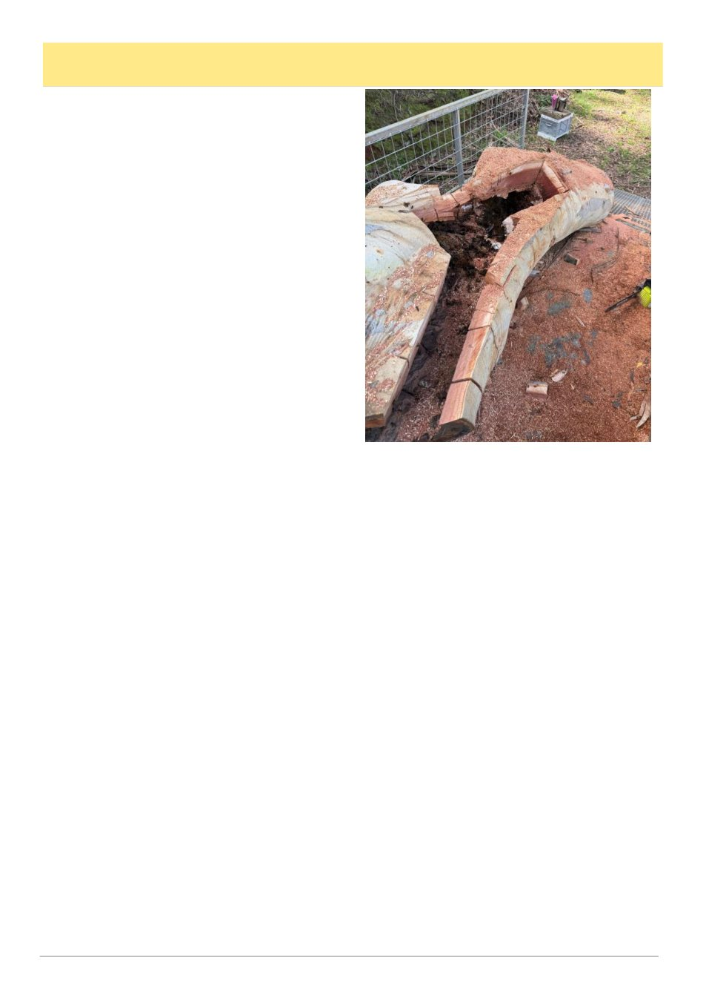

August 2026
33
Victorian Beekeepers As Part Of The Solution, cont’d
could be expected to sustain the scale, specialist capa-
bility and dependable data required. That points us to-
ward support for private and cooperative breeding, not
a public competitor to queen producers, rather an ena-
bling capability.
Nationally, AHBIC reported that the 30 June Honey
Bee Industry Emergency Roundtable worked through
55 proposals and distilled them into 11 actions for state
and federal government decision makers. Genetic im-
provement sits amongst them, with longer term work
being discussed alongside the immediate varroa re-
sponse.
Following its July AGM, AHBIC is also considering
terms of reference for a breeder focused subcommittee
and separate levy reform proposals, including on queen
bees. Neither are settled or guarantee funding or focus,
but both show breeding entering formal national gov-
ernance and resourcing discussions.
The Australian Queen Bee Breeders‘ Association‘s
(AQBBA) Varroa Sensitive Hygiene (VSH) Collective
is already doing practical work through common as-
sessment and distributed apiaries. National results will
depend on local bees, trained people, assessment sites
and trusted relationships. The VBRN could help pro-
vide that Victorian base, so our local industry both in-
forms and benefits from the national effort.
Why not simply breed from survivors?
Some beekeepers may ask: why not stop treating
selected colonies and breed from the survivors? Honey
bees have adapted through millions of years of environ-
mental change. Natural selection can find answers we
do not yet understand.
But Varroa destructor is a comparatively recent par-
asite of our honeybee. At industry scale, we cannot
stand back and accept whatever losses occur while that
relationship settles.
Survivor selection must be taken seriously. Untreat-
ed populations in Europe have developed resistance
mechanisms at research and recreational scales, while
EurBeST tested selected lines under commercial, Euro-
pean, conditions. Cuba has around 220,000 managed
colonies that have been treatment free for more than
two decades and is an often sited proof that treatment
free works. In the United States, Thomas Seeley‘s Dar-
winian Beekeeping and Randy Oliver‘s low mite selec-
tion take different approaches from the same evolution-
ary premise. However, none of these lessons can be
transplanted wholesale into Victoria, Australia or our
associated industry.
I am not suggesting swarms, long lived unmanaged
colonies and cut outs should not be considered. They
can widen the genetic pool considered for assessment.
One may even carry the ‗unicorn‘ combination we have
been looking for. But origin and survival are clues, not
proof. A colony might persist because it stays small,
swarms often or tolerates mites, rather than because it
suppresses mite reproduction. Critically, a genetic uni-
corn is not much use if it drives its horn through anyone
who opens the hive, produces no surplus honey, or does
not build to pollination strength when growers need it.
The VBRN gives promising material somewhere to
go. Candidate stock could be biosecurity screened,
identified, assessed across sites and tested through de-
scendants. If useful traits hold, breeders could access
them without losing sight of the other qualities Victori-
an beekeepers need. The aim is to turn a survivor worth
watching into evidence, and evidence into genetics that
can serve the industry. We know first hand that this is
difficult work for one beekeeper or a loose collective to
achieve alone.
What the VBRN could connect
The VBRN would not be a breeding business, nor
would it replace AQBBA, AHBIC or a national pro-
gram. It would give Victoria a way to connect breeders
and researchers with beekeepers, commercial through
recreational, regional apiaries, clubs, monitoring sites
and ‗unicorns‘.
Using the same identification and assessment meth-
ods would make observations useful beyond one apiary,
while training could allow more people to collect credi-
ble information. Agreed processes could support test-
ing and responsible propagation of promising stock.
Breeding and queen production would stay with breed-
ers and beekeepers, and hopefully grow as the capabil-
ity matures.
Participation would not require everyone to breed
queens. Commercial beekeepers could test colonies
under production conditions. Clubs and recreational
(Continued from page 32)
(Continued on page 34)
In search of the 'unicorns'. The continuation of the
recovery of the feral bee colony from the cover image.
Not all genetics from wild-living bees are transferable to
the industry, the VBRN proposes an option for those that
are showing promise.
Mount Macedon Honey Quarantine Apiary, 2026